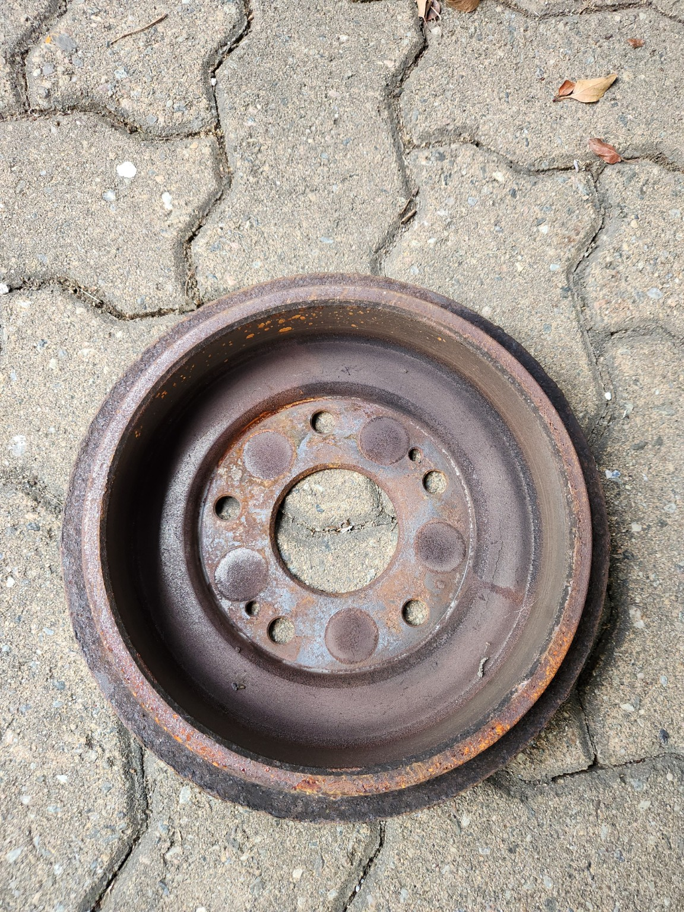
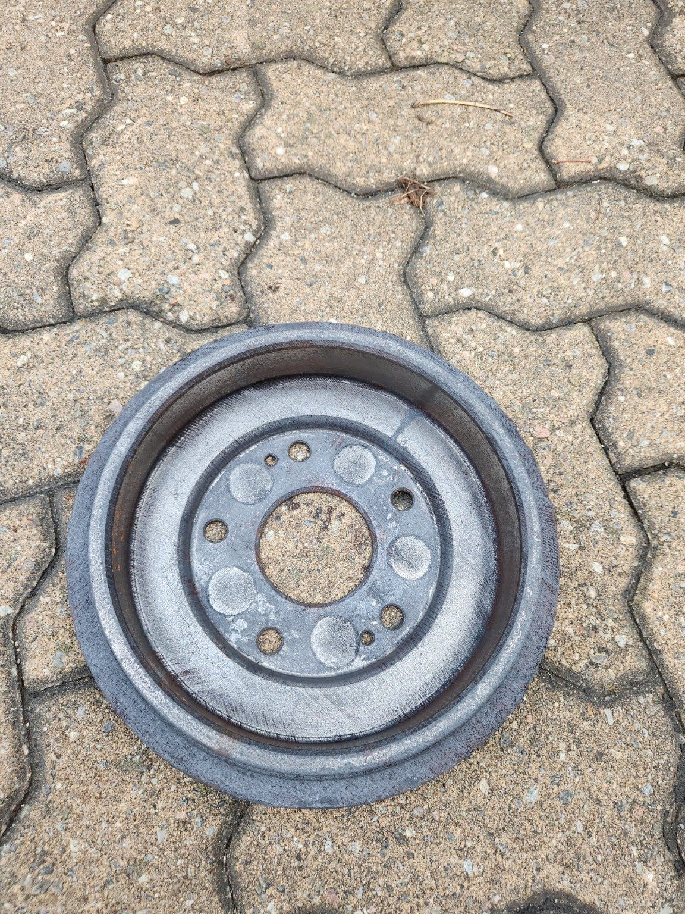

Essai documenté · Pièce automobile
Documented test · Automotive part
Retrait de rouille sur un tambour de frein
Rust removal from a brake drum
Essai de nettoyage au laser sur une pièce métallique automobile présentant de la corrosion de surface. Photos originales, sans retouche.
Laser-cleaning test on a corroded automotive metal part. Original photos, without retouching.
Les photos de l’essai
Test photographs




Cliquez sur une photo pour ouvrir le JPEG original en pleine résolution. Aucun filtre, recadrage ou texte n’a été appliqué aux fichiers.
Click any photo to open the original full-resolution JPEG. No filters, cropping or text were applied to the files.
Voir d’autres essais
See more tests
Explorez les autres pièces de notre galerie.
Explore other parts in our gallery.